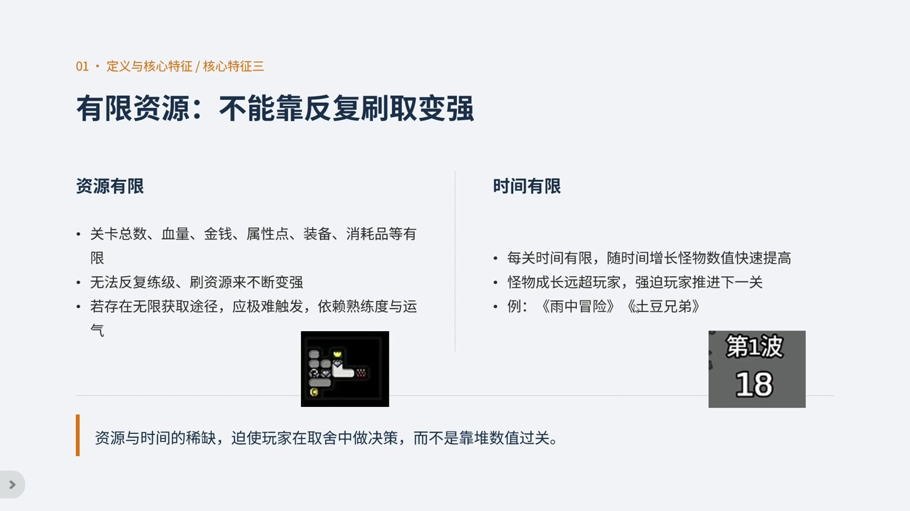

有限资源：稀缺制造决策
随机给了每局不同的开局，死亡让失败不可撤销，但这两条还不足以解释肉鸽的紧张：如果玩家可以停下来反复刷，那他迟早能把数值堆过任何关卡。真正把“这局能不能过”变成悬念的，是第三条——资源是有限的，你不可能把每个方向都补满。
视频里把这一条讲得很直白：肉鸽和常规 RPG 最大的不同，是玩家不能靠反复刷取变强，必须在取舍中做决策。这一章把它拆成两种“有限”、三种压缩方式，以及一条判断“无限 loop”该不该堵的标准。
4.1 稀缺的本质是机会成本
“有限”不是一个数量设定，而是让每一次获得都伴随放弃。金币总量固定，你买了攻击道具就买不起回血；血上限固定，你换了伤害就更容易死；路线节点固定，你走了商店就走不到篝火。
《以撒》的结构很适合看这一点：每层的房间数量是固定的，打完怪掉的钱也就那么多。正常打完整层，你能在商店里买一两个东西，而不是全买。这个“买不完”不是数值失衡，是设计意图——它逼你在攻击、血量、道具之间排序。
判断资源是否真的有限
不看配置表，看玩家行为：是否存在一种“停下来多花时间就能变强”的路径。如果有，无论你把单次收益调得多低，玩家最终都会选择刷——因为在风险固定的情况下，刷是严格占优策略。
4.2 两种稀缺：资源有限与时间有限
| 类型 | 怎么压 | 玩家感受 | 典型案例 |
|---|---|---|---|
| 资源有限 | 关卡总数、血量、金钱、属性点、装备槽、消耗品上限都设天花板；单层敌人与掉落数量固定 | “我得决定这钱花在哪” | 《以撒的结合》《杀戮尖塔》 |
| 时间有限 | 每波/每层限时，时间到就结算；或难度随停留时间增长 | “我得多打一点，但不能贪” | 《土豆兄弟》《雨中冒险》 |
两种压法的心理效果不同。资源有限制造的是分配焦虑，时间有限制造的是节奏焦虑。资源型适合强调构筑与规划，时间型适合强调操作与临场判断。
时间有限的两种形态
《土豆兄弟》是硬限时：一共 20 波，每波有固定时长，时间一到这一波就结束，你这一波能拿到的材料就那么多。它把“贪”这件事直接砍掉了——你没法多杀，时间到了敌人就撤。
《雨中冒险》是软限时：时间是无限的，但怪物等级随游戏时长上涨，越拖越硬。玩家理论上可以一直刷，实际上不敢——刷到第 25 分钟，普通小怪的血量已经超过你的输出。视频里的说法是“变相压缩玩家生存空间”，这个描述很准：它没有禁止你刷，只是让刷的边际收益变成负的。
房间数与掉落固定"] --> B["分配焦虑
钱花在哪"] C["时间硬限
波次倒计时"] --> D["节奏焦虑
贪多就亏"] E["时间软限
难度随时间上涨"] --> F["节奏焦虑 + 风险定价
多刷一会儿，赌一把"] B --> G["玩家做取舍"] D --> G F --> G style G fill:#e9f7ec,stroke:#2e7d32,color:#14395a
三种方式的取舍在于可控性：硬限时最可控，参数好调，玩家也好理解；软限时需要一条足够陡的难度曲线，陡了玩家觉得被赶，缓了玩家会刷到溢出。资源有限最灵活，但对生成与掉落设计的要求最高。

4.3 通胀：资源变多之后，定价必须跟着动
几乎所有肉鸽都会遇到同一个问题：前期金币极度紧缺，后期金币多到花不完。原因很简单——玩家后期的清怪效率远高于前期，而商店价格是固定的。
解法是让价格随进度上涨，让“货币的购买力”保持稳定。两种常见做法：
- 价格随层数上浮：商店价格 = 基础价 × 系数层数-1。系数建议在 1.05–1.15 之间，超过 1.2 会让后期玩家觉得“赚了钱也买不起”。
- 行为涨价：某个操作每做一次就涨价，比如《杀戮尖塔》删牌，第一次 75 金币，之后每次递增。这类设计的作用是给“重复同一件事”加上递减收益，防止单一策略被无限复制。
4.4 无限 loop：留还是堵
玩家社区永远能挖出“无限循环”：某几件道具组合起来，可以无限刷资源、无限叠伤害。视频里讲者的态度不是一刀切禁止，而是给了一组判断条件。这套条件很好用，值得记住：
一个“无限”可以保留的四个条件
- 极难达成：需要特定的多件道具组合，玩家玩几百局未必遇到一次。
- 高度依赖熟练度与运气：不是看攻略就能复现，需要操作与判断。
- 逻辑自洽：它是道具效果的自然结果，而不是数值漏洞。
- 不是主路径：绝大多数玩家仍要靠正常打法推进。
四条都成立，这种无限就是彩蛋，它给深度玩家一个探索目标，也给社区提供话题。任何一条不成立——尤其是“容易达成”或“成为主流打法”——它就是设计漏洞，必须堵。
怎么堵才不伤玩家？优先用提高门槛而不是直接削效果：增加组合所需件数、给关键道具加获取条件、让无限 loop 的启动需要更多资源。直接改数值会让已经打出这套的玩家觉得被抢了东西，社区反馈通常很难看。
4.5 资源预算表：让“有限”变成可计算
“资源有限”在需求文档里必须落成数字，否则程序只能猜。一张最小可用的预算表长这样：
| 项目 | 公式/来源 | 示例值（第 3 层） |
|---|---|---|
| 单层房间数 | 固定配置 | 12 |
| 战斗房占比 | 配置 | 60% → 7 个 |
| 单战斗房金币期望 | 基础掉落 × 层数系数 | 18 |
| 单层金币总收入期望 | 7 × 18 ≈ 126 | 126 |
| 商店商品均价 | 基础价 × 1.12 | 35 |
| 单层可购买件数 | 126 / 35 ≈ 3.6 | 约 3 件 |
| 设计目标 | “买得起 2–3 件，必须放弃 2 件” | 成立 |
这张表的价值在于：当玩家反馈“钱根本花不出去”或“什么都买不起”时，你不用猜，直接对表就能定位是收入侧还是价格侧的问题。
4.6 实现：预算与通胀曲线
using System;
[Serializable]
public class FloorEconomyConfig
{
public int BaseRooms = 12;
public float CombatRoomRatio = 0.6f;
public int BaseGoldPerCombat = 15;
public float GoldGrowthPerFloor = 0.18f; // 每层收入增长
public int BaseShopPrice = 30;
public float PriceGrowthPerFloor = 0.10f; // 每层价格上涨
}
public static class EconomyMath
{
public static int GoldIncome(int floor, FloorEconomyConfig cfg)
{
int combats = (int)Math.Round(cfg.BaseRooms * cfg.CombatRoomRatio);
double perRoom = cfg.BaseGoldPerCombat * Math.Pow(1 + cfg.GoldGrowthPerFloor, floor - 1);
return (int)Math.Round(combats * perRoom);
}
public static int ShopPrice(int floor, FloorEconomyConfig cfg)
{
return (int)Math.Round(cfg.BaseShopPrice * Math.Pow(1 + cfg.PriceGrowthPerFloor, floor - 1));
}
/// <summary>单层能买几件：用来验收“稀缺感”是否成立</summary>
public static float PurchasableItems(int floor, FloorEconomyConfig cfg)
{
return (float)GoldIncome(floor, cfg) / ShopPrice(floor, cfg);
}
}
// 验收用法：目标区间 2.0–3.5 件
// for (int f = 1; f <= 10; f++)
// Debug.Log($"第 {f} 层可买 {EconomyMath.PurchasableItems(f, cfg):F1} 件");
4.7 三个坑
伪稀缺
配置上限，但存在可重复刷取的入口：某个房间能反复进出、某个事件能重复触发、某个敌人会无限刷小怪。玩家一旦发现，所有上限都失效。测试方法：让 QA 用“最贪”的玩法跑一遍，记录单层收益的上界。
通胀失控
收入涨 20%、价格涨 10%，十几层之后金币严重溢出。要么让价格涨幅略高于收入涨幅，要么增加后期的消耗口（重铸、洗练、升级），否则后半局的资源管理会消失。
稀缺过度
把资源压得太紧，玩家每一层都在生死线上，没有余力试验构筑。稀缺是为了制造选择，不是为了制造绝望。判断方法：看通关率——如果 90% 的玩家死在第 4 层之前，你的稀缺已经越界了。
实现练习 4-1
用上面的 EconomyMath，为你的项目算一条 10 层的曲线，要求“可购买件数”在前 3 层上升、中段持平、后 3 层缓慢下降。写出你调的是哪两个参数，为什么。
判断练习 4-2
列出你项目里所有能获得资源的途径，逐条标注“是否可重复触发”“单位时间收益是否恒定”。凡是有重复触发的，就是潜在的伪稀缺漏洞。
判断练习 4-3
假设玩家发现了一个可以无限刷伤害的组合。按四个条件逐条判断它是彩蛋还是漏洞，并写出你的处理方案：提高门槛、限制次数、还是重做机制。注意先想清楚“已经打出这套的玩家会怎么反应”。
本章小结
- 稀缺的本质是机会成本，它让每一次获得都伴随放弃。
- 三种压缩方式：资源有限（分配焦虑）、硬限时（节奏焦虑）、难度随时间增长（风险定价）。
- 资源变多后必须让定价跟着动，否则后半局的选择空间会消失。
- “无限 loop”按四条标准判断：极难达成、依赖熟练与运气、逻辑自洽、非主路径。
- 预算表要用比值验收（可购买件数），不要用绝对值。